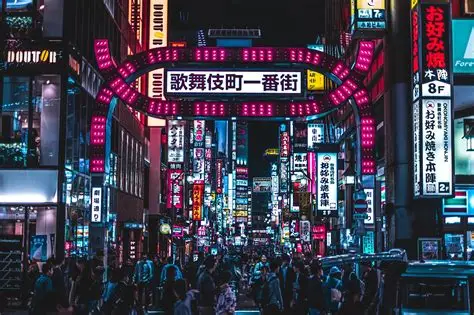
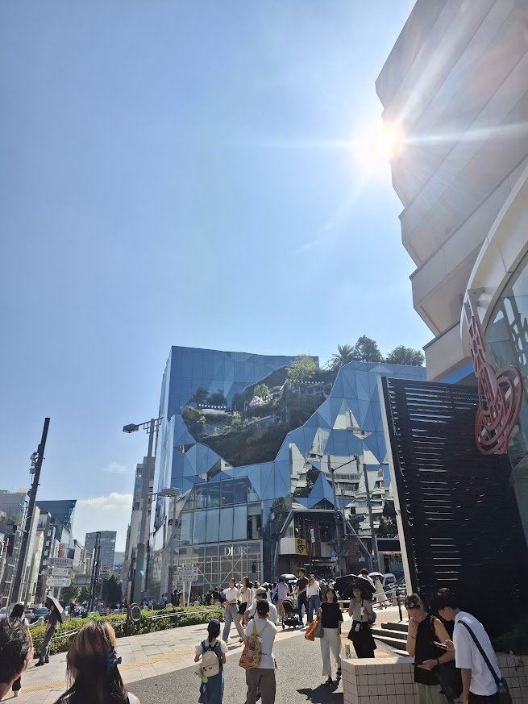
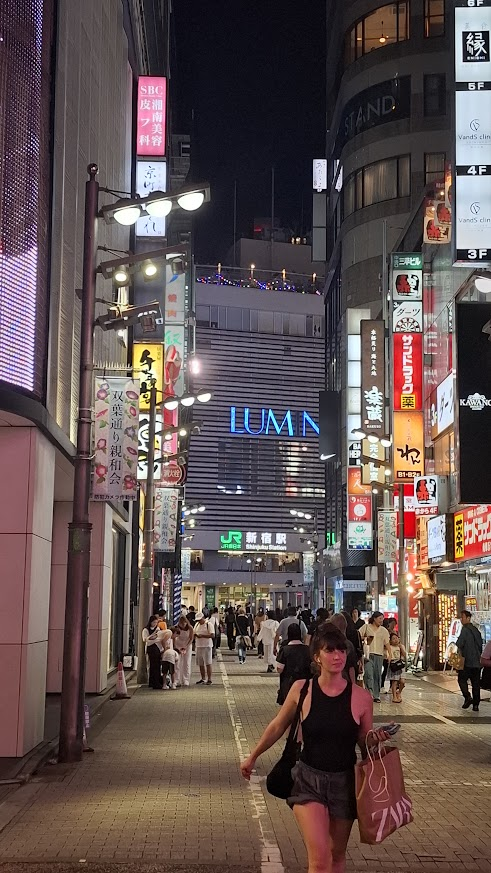
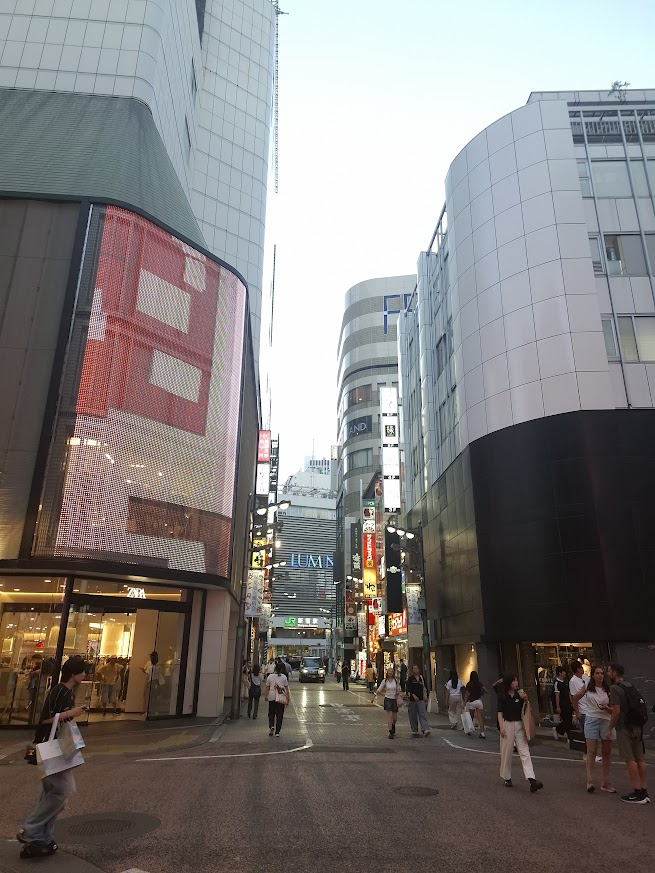

新宿區是東京最繁華的商業與娛樂中心之一，擁有世界最繁忙的交通樞紐，從摩天大樓林立的西口到不夜城歌舞伎町，展現了東京充滿活力的一面。
新宿御苑
位於繁華市中心的大型庭園，融合了日式庭園、英式風景庭園與法式幾何庭園，春天賞櫻與秋天賞楓都非常迷人。

歌舞伎町
日本最著名的不夜城娛樂區，霓虹燈招牌與大廈上的哥吉拉頭像極具特色，聚集了無數居酒屋、餐廳與商店。
旅遊照片紀錄



新宿區是東京最繁華的商業與娛樂中心之一，擁有世界最繁忙的交通樞紐，從摩天大樓林立的西口到不夜城歌舞伎町，展現了東京充滿活力的一面。
位於繁華市中心的大型庭園，融合了日式庭園、英式風景庭園與法式幾何庭園，春天賞櫻與秋天賞楓都非常迷人。

日本最著名的不夜城娛樂區，霓虹燈招牌與大廈上的哥吉拉頭像極具特色，聚集了無數居酒屋、餐廳與商店。


